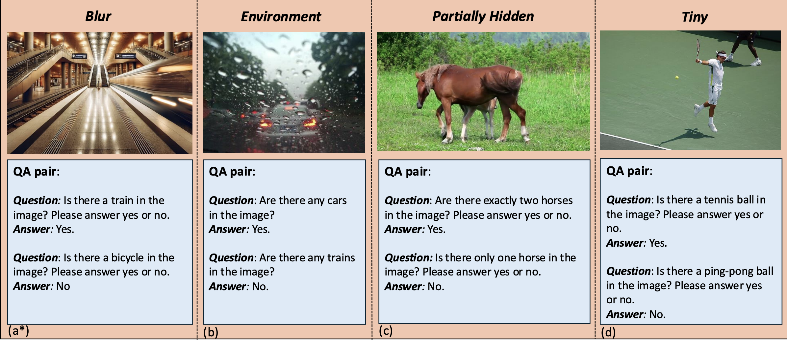

[02-19-2025]: Our paper is available on arxiv!
Large Vision-Language Models (LVLMs) have shown impressive performance in various tasks. However, LVLMs suffer from hallucination, which hinders their adoption in the real world. Existing studies emphasized that the strong language priors of LVLMs can overpower visual information, causing hallucinations. However, the positive role of language priors is the key to a powerful LVLM. If the language priors are too weak, LVLMs will struggle to leverage rich parameter knowledge and instruction understanding abilities to complete tasks in challenging visual scenarios where visual information alone is insufficient. Therefore, we propose a benchmark called LanP to rethink the impact of Language Priors in LVLMs. It is designed to investigate how strong language priors are in current LVLMs. LanP consists of 170 images and 340 corresponding well-designed questions. Extensive experiments on 25 popular LVLMs reveal that many LVLMs' language priors are not strong enough to effectively aid question answering when objects are partially hidden. Many models, including GPT-4 Turbo, exhibit an accuracy below 0.5 in such a scenario.
Our goal is to assess the positive role of language priors in LVLMs. Therefore, we selected questions where certain objects in the images are not very clear, challenging the models' ability to accurately interpret visual information, aiming to show that language priors can aid understanding when visual information is ambiguous. It could be hard for LVLMs to answer questions based only on visual information.

In our dataset, the image could provide enough background/environment information for the model. However, certain objects remain unclear due to factors such as darkness and blurriness, making it difficult for the model to interpret and output the answer correctly. If the model can better utilize language priors to understand the overall context of the image, it can provide more accurate answers. We consider four types of scenarios: blur, environment, partially hidden, and tiny.
To fully evaluate the quality of LanP and understand the effects of language priors in visual question answering, we conduct comprehensive experiments on 25 representative closed-source and open-source LVLMs:
| Model | Env Acc | Ph Acc | Blur Acc | Tiny Acc | Overall Acc |
|---|---|---|---|---|---|
| GPT-4 Turbo | 0.7800 | 0.4500 | 0.7800 | 0.5333 | 0.6588 |
| GPT-4o | 0.9000 | 0.7750 | 0.9400 | 0.8333 | 0.8706 |
| GPT-4o mini | 0.8200 | 0.6250 | 0.8800 | 0.5333 | 0.7412 |
| Gemini 1.5 Pro | 0.9000 | 0.7250 | 0.8400 | 0.8333 | 0.8294 |
| Gemini 1.5 Flash | 0.9400 | 0.7000 | 0.9200 | 0.8333 | 0.8588 |
| InternVL2.5-26B | 0.9400 | 0.7500 | 0.8600 | 0.8667 | 0.8588 |
| InternVL2.5-8B | 0.9000 | 0.5500 | 0.9400 | 0.8333 | 0.8176 |
| InternVL2.5-4B | 0.9400 | 0.5500 | 0.9600 | 0.8667 | 0.8412 |
| InternVL2.5-2B | 0.9400 | 0.4500 | 0.8800 | 0.6667 | 0.7588 |
| InternVL2.5-1B | 0.8200 | 0.4000 | 0.8600 | 0.6667 | 0.7059 |
| InternVL2-26B | 0.9200 | 0.6250 | 0.8800 | 0.7667 | 0.8118 |
| InternVL2-8B | 0.7800 | 0.4500 | 0.8000 | 0.7000 | 0.6941 |
| InternVL2-4B | 0.8200 | 0.4500 | 0.7400 | 0.6667 | 0.6824 |
| InternVL2-2B | 0.7600 | 0.2500 | 0.7000 | 0.3333 | 0.5471 |
| InternVL2-1B | 0.7600 | 0.3500 | 0.8200 | 0.6000 | 0.6529 |
| Cambrian-13B | 0.8600 | 0.4750 | 0.7800 | 0.6333 | 0.7059 |
| Cambrian-8B | 0.9000 | 0.7000 | 0.8400 | 0.7667 | 0.8118 |
| Mini-InternVL-Chat-4B-V1-5 | 0.7800 | 0.4000 | 0.8000 | 0.7000 | 0.6824 |
| Mini-InternVL-Chat-2B-V1-5 | 0.8800 | 0.2000 | 0.8200 | 0.6000 | 0.6529 |
| ShareGPT4V-13B | 0.8400 | 0.2750 | 0.8600 | 0.6667 | 0.6824 |
| ShareGPT4V-7B | 0.8200 | 0.3250 | 0.5800 | 0.6333 | 0.6000 |
Overall results of different models on the LanP leaderboard. The best-performing model in each category is in-bold.
@article{wu2025lanp,
title={LanP: Rethinking the Impact of Language Priors in Large Vision-Language Models},
author={Zongyu Wu and Yuwei Niu and Hongcheng Gao and Minhua Lin and Zhiwei Zhang and Zhifang Zhang and Qi Shi and Yilong Wang and Sike Fu and Junjie Xu and Junjie Ao and Enyan Dai and Lei Feng and Xiang Zhang and Suhang Wang},
journal={arXiv preprint arXiv:2502.12359},
year={2025}
}